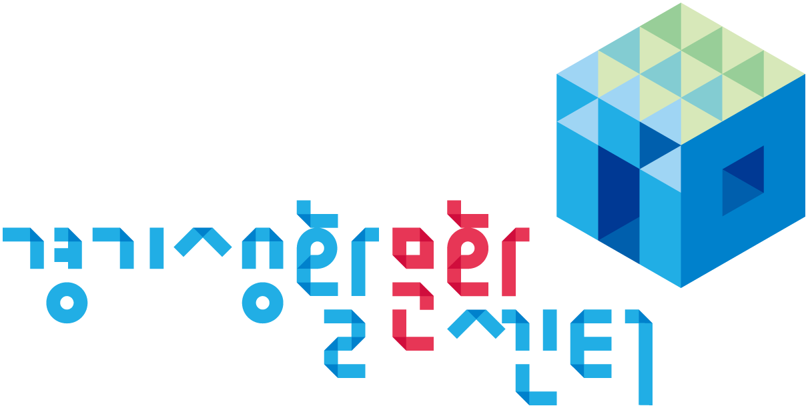
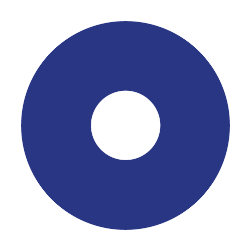
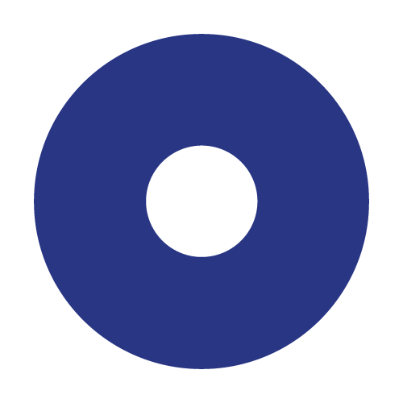
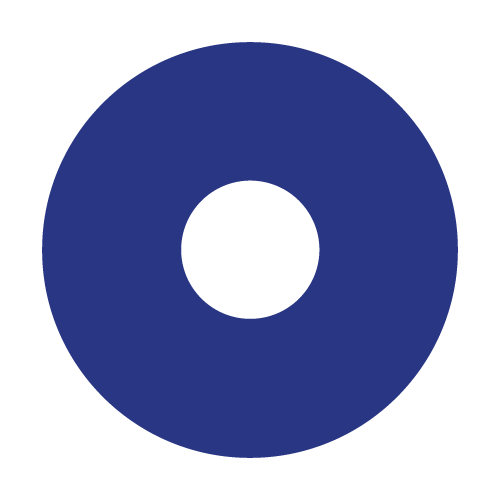

경기생활문화센터
센터소개
조직도
사업안내
오시는길
경기도생활문화
우리지역 생활문화공간
생활문화 찾기
기록자료
영상채널
발간도서
지난사업
웹진
소개
웹진
소통
공지사항
자주묻는질문
1:1문의
로그인
검색
일정
센터소개
조직도
사업안내
오시는길
우리지역 생활문화공간
생활문화 찾기
영상채널
발간도서
지난사업
소개
웹진
공지사항
자주묻는질문
1:1문의
타이틀 배너 영역

경기도생활문화
우리지역 생활문화공간
생활문화찾기
경기도생활문화
우리지역 생활문화공간
경기도 내 센터 지도
총
31
개 지역
95
개소
공공기관
민간단체
전체보기
가평
1개소
고양
7개소
과천
3개소
광명
4개소
광주
2개소
구리
2개소
군포
3개소
김포
3개소
남양주
2개소
동두천
2개소
부천
7개소
성남
5개소
수원
9개소
시흥
1개소
안산
4개소
안성
1개소
안양
2개소
양주
3개소
양평
3개소
여주
3개소
연천
1개소
오산
2개소
용인
3개소
의왕
2개소
의정부
3개소
이천
2개소
파주
1개소
평택
4개소
포천
2개소
하남
3개소
화성
5개소
 
